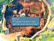
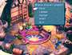
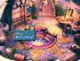

|
After
leaving the Ice Cavern, head to the Observatory Mountain before
going into Dali. There's an elderly fellow named Morrid inside
the hut, who's just dying for a good cup of java. Find the three
coffees at different locations in the world and return to Observatory
Mountain with them, before the end of Disc 3, and Mr. Morrid
will reward you.
|
 |
Here
are the locations of the three coffees:
 SPECIAL
ITEMS SPECIAL
ITEMS
KEYWORD: MORRCOF2 |
|
Moccha
Coffee
|
At
the South Gate entrance near the Chocobo Forest
|
|
Kirman
Coffee
|
On
Eiko's back porch in Madain Sari
|
|
Burman
Coffee
|
This
one is a little harder to get, however, so keep reading!
|
To
get the Burman Coffee, Zidane must leave Treno during the card tournament
and head through South Gate to Dali. The mayor is not at home at
this time, so search his house for his key. When you enter his house,
Zidane spots the mayor's son napping on the sofa in the middle of
the room. If Zidane moves too hastily, he'll awaken the boy and
have to start the search over again.
|  |
Start
by searching the mayor's desk. You will find the Mini-Brahne
here. Search the desk two more times until the boy says
"Zzzz." Move to the stove and search it to find the
Mayor's Key and then leave. Go to the locked door in
the windmill and use the key to open it. Move around the chocobo
pen to the right side, where a hidden treasure chest contains
30,000 Gil. Check the same chest again to find the Burman
Coffee. |
| Now
return to Observatory Mountain and give the three coffees to
Morrid. He promises to send you the Mini-Prima Vista
model ship. The next time you're in Lindblum, return to the
Tantalus hideout to find it sitting on the floor near the bed.
|
|
Again,
you must get the Burman Coffee during the card tournament in Treno.
Otherwise, it will be too late. You can visit Morrid to complete
the side quest any time before visiting Terra
TIP
|
|
The Windmill Has Stopped!
|
| Since
the windmill in Dali has stopped turning, this is also a good
time to climb up top and get the Cachusha and Elixir
in the chests. |
|
){kind=link}
){kind=link}
){kind=link}
){kind=link}
){kind=link}